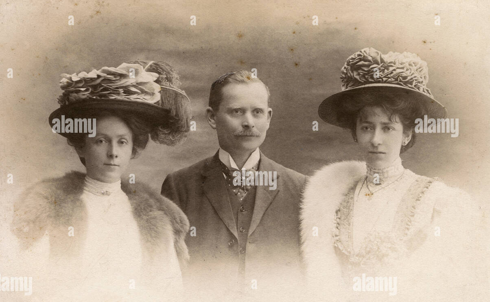
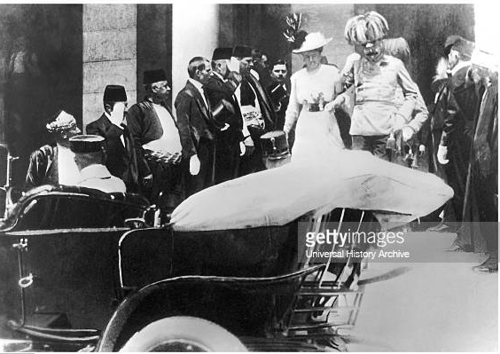

‘What a film!
Malbone, 24 th march,1892
Calif. man claims winning $2.04 billion Powerball ticket was stolen from him
By Snejana,23 th Feb,1892
Edwin Castro was identified as the winner
Malbone, 1 st march,1892
Open up your world view
London, 1 st march,1892
A year on, we’ll keep on covering every minute
Malbone, 1 st march,1892
The Athletic’s Jeff Rueter previews the World Cup semifinals
Sanfran, 11 st march,1892
Harvey Weinstein sentenced to 16 years in LA rape case
Mississippi, 17 th march,1892
Judge Lisa B. Lench denied the disgraced
Malbone, 15 th Feb,1892
Harvey Weinstein files appeal of rape, sexual assault
By Rosner, 14 th Feb,1892
Jane Doe 1 wasnt Al Pacino rich
Malbone, 1 st march,1892
Peru recalls ambassador to Mexico
Malbone, 1 st march,1892
The biggest monster in Hollywood
Malbone, 27 th Feb,1892
‘Sound like Mickey Mouse’: East Palestine residents’ shock illnesses after derailment
February 25 th ,1892
Biden says he has no plans
Victor Nava, 13 rd Feb,1892
Frightened Ohio residents grill train CEO, Gov.
By Isabel Keane, 15 th march,1892
Activist Erin Brockovich warns Ohio
By Ass: Press, 17 th march,1892
Cory Hofmeister, said they didn’t feel safe
NewYork, 13 th march,1892
Pete Buttigieg mocked at Ohio train derailment
By Josh, 24 th,1892
Manhattan’s 86th Street isn’t what it used to be

Malbone, 1 st Feb,1892
Yoko Ono leaves NYC after 50 years, moves to farm

Malbone, 1 st march,1892